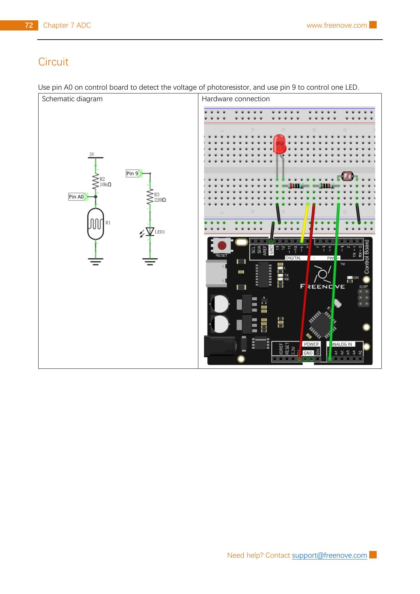

Build a voltage divider with a photoresistor, read it on A0, and use the reading to set the brightness of an LED on pin 9. When the photoresistor is covered, the LED should become brighter.
Gather the parts
Uno-compatible board and USB cable
Breadboard
1 photoresistor (light-dependent resistor)
1 LED
1 resistor marked 10 kΩ
1 resistor marked 220 Ω
5 male-to-male jumper wires
Important: use only the board’s 5 V, GND, A0, and pin 9 connections shown here. This project is for the USB-powered board only: never connect the breadboard to wall power, a battery pack, or a higher-voltage circuit.
Build it, one check at a time
Step 1 — Read the source circuit
Keep USB unplugged. This unchanged reference page from the permitted Freenove tutorial shows its Project 7.3 schematic and breadboard layout. The left side is the sensor: a 10 kΩ resistor goes from 5 V to a shared measuring point, and the photoresistor goes from that point to GND. The Arduino reads that point on A0.

Reference image: Freenove Ultimate Starter Kit, Tutorial.pdf, Chapter 7, Project 7.3, PDF page 76 / printed page 72. Rasterized unchanged from the permitted source pack under CC BY-NC-SA 3.0.
Step 2 — Build the light-measuring divider
Put the photoresistor in the breadboard so its two legs are in separate rows. It has no + or − side. Choose one row as the measuring junction. Connect 5 V → 10 kΩ resistor → measuring junction. Connect measuring junction → A0. Then connect measuring junction → photoresistor → GND. Trace the junction: A0, one end of the 10 kΩ resistor, and one photoresistor leg must all meet there.
In brighter light, the photoresistor’s resistance decreases. In this source circuit that pulls the A0 junction closer to GND; when it is darker, the junction voltage rises. A0 measures voltage—it does not supply power to the sensor.
Step 3 — Add the indicator LED
Place the LED with its two legs in separate breadboard rows. Connect pin 9 → 220 Ω resistor → LED long leg (anode). Connect the LED short leg (cathode, usually the flat-side leg) to GND. The 220 Ω resistor limits LED current; do not omit it. Compare every wire and the LED direction with the reference image before reconnecting USB.
If your LED is a different shape, use its flat edge and datasheet to identify the cathode rather than guessing. Never move a wire while the USB cable is connected.
Step 4 — Upload the darkness reader
Connect USB, select your Uno-compatible board and serial port in Arduino IDE, then upload this original sketch.
What the code means:analogRead(lightPin) turns the A0 voltage into a number from 0 to 1023. The Uno’s ADC has 10-bit resolution. map(..., 0, 1023, 0, 255) changes that range into the 0–255 PWM brightness range for pin 9. In this wiring, darkness produces a higher reading, so the LED becomes brighter.
Step 5 — Test with a hand shadow
Look at the LED, then gently shade the photoresistor with your hand. Do not press hard on its legs. The LED should brighten as the sensor gets darker and dim again when room light reaches it. Try changing the room light too, but do not stare into a bright lamp or point a laser at the sensor.
If the LED stays dark, unplug USB before checking the LED direction, the 220 Ω resistor, pin 9, and GND. If the LED does not react to light, check that A0 shares exactly one junction with the photoresistor and 10 kΩ resistor; also make sure the other photoresistor leg reaches GND and the other 10 kΩ resistor leg reaches 5 V.
Tiny challenge
Make a prediction before changing code: which number should be larger, a bright-room reading or a covered-sensor reading? Then change delay(50) to delay(250), observe the slower response, and restore 50. Explain why timing can change the response without changing the sensor wiring.
The unchanged reference image and upstream material are from Freenove’s Ultimate Starter Kit and are used under CC BY-NC-SA 3.0. Attribution, noncommercial, and ShareAlike requirements apply.